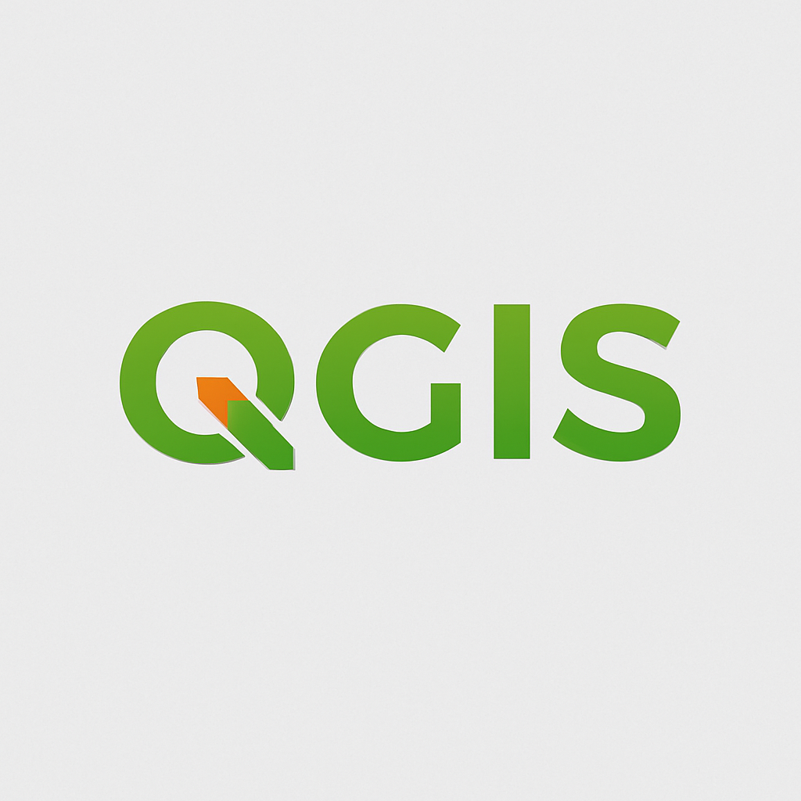

Technologies
Tabular list of tools with logos, and an OpenLayers demo map.
| Logo | Technology | Description | Links |
|---|---|---|---|
| HTML5 | Semantic markup and accessibility. | html5.org → | |
| CSS3 | Layout, animations and responsive design. | css3 → | |
| JavaScript | DOM interactions and UI behaviors. | js.org → | |
| OpenLayers | Web maps with vector and tile layers. | openlayers.org → | |
| Git & GitHub | Version control and GitHub Pages hosting. | github.com → | |
| Python | General-purpose programming language widely used for data analysis, GIS, and automation. | python.org → | |
|  | QGIS | Open-source GIS platform for spatial data editing, analysis, and map production. | qgis.org → |
OpenLayers Map — Ankara / Beytepe
Default center is Ankara. If you came from See on Map, the view focuses on Beytepe Campus.